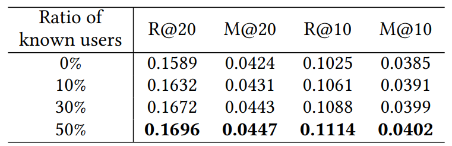

摘要
由于Session-based Recommender Systems（SRS）中缺少用户相关信息，所以很难直接从数据中获得用户的整体兴趣。因此，现有的SRS侧重于如何在会话中有效地建模有关短期兴趣的信息，但它们不足以捕获用户的整体兴趣。为此，作者提出了一个新的框架来克服SRS的局限性，名为ProxySR，它通过对会话代理进行建模来模拟SRS中缺失的信息（即用户的整体兴趣）。
ProxySR以无监督的方式为输入的会话选择一个合适的proxy，将其与从该会话提取的短期兴趣结合，用于next item prediction。此外，作者还提出了SRS的另一种现实情况，即少数用户登录并在会话中留下他们的标识符，并针对这种情况修改了ProxySR。
ProxySR模型设计的初衷来源于以下总体兴趣的特征：
- 多个会话可能具有相似的用户总体兴趣（比如，这多个会话是由同一个用户创建的，且该用户具备稳定的总体兴趣）
- 除了短期兴趣外，总体兴趣也可以弥补会话推荐中丢失的信息，以帮助预测下一个交互的item
Methond

Proxy Selection
ProxySR首先通过输入的session \(s\) 构建偏态概率分布，进而从预先定义的K个proxy embeddings选择一个proxy embedding。更具体地说，ProxySR利用encoder network生成概率的对数，然后通过用具有温度参数的softmax函数将其转换为偏态概率分布 \(\pi \in \mathbb{R}^K\) ，如下所示：
\[\boldsymbol\alpha=f^P(s)\] \[\boldsymbol{\pi_i}={exp(\boldsymbol{\alpha_i}/\tau)\over \sum_{j=1}^Kexp(\boldsymbol{\alpha_j}/\tau)} \ for\ i\in(1,2,...,K) \tag{1}\label{eq1}\] 其中 \(f^P\in\mathbb{R}^K\)是对于session \(s\) 的 encoder network。𝐾为Proxy数量，\(\boldsymbol{\pi_i}\)是第i个Proxy的概率。\(\tau>0\)是温度参数。当\(\tau\)越小，\(\boldsymbol\pi\)变成一个接近one-hot向量的分布。当\(\tau\)越大，\(\boldsymbol\pi\)变成一个每个元素接近1/K的均匀分布。因此，作者将一个较大的初始值指定给𝜏 并随着训练的进行而减小，因为如果𝜏 很小，梯度会偏向于少数对数，这对于不稳定的初始训练是不可取的。最后获得session \(s\)的proxy embedding \(p^{(s)}\)
\[
\gamma={\sum_{j=1}^K\Vert\boldsymbol{\pi_j}P_j\Vert_2\over \Vert\sum_{j=1}^K\boldsymbol{\pi_j}P_j\Vert_2}
\] \[p^{(s)}=\gamma\sum_{j=1}^k\boldsymbol{\pi_j}P_j\tag{2}\]
其中 \(P\in\mathbb{R}^{K\times d}\) 是proxy embedding matrix。\(\tau\) 经过几次训练后已经足够小了，因此 \(\pi\) 变为一个one-hot vector，并且仅从集合中选择一个proxy embedding。
当\(\tau\)在初始训练阶段较大时，获得的代理的规模可能太小，因为每个proxy都是以均值为 0 随机初始化的，并均匀聚合以相互抵消。因此，作者通过使用 \(\gamma\) 重新缩放获得的proxy来防止这个问题，这迫使其 \(\mathcal{l}_2\) 范数保持proxies的 \(\mathcal{l}_2\)范数的加权平均值。
\(\boldsymbol{f^P(s)}\)实现细节
encoder network如下
\[f^P(s)={i\over n} \sum_{j=1}^nW^{P,(2)^T}\sigma\left(W^{P,(1)^T}\left(I_{s_j}+E_j^P\right)\right)\tag{3}\label{eq3}\]
其中，\(I_{s_j}\)是session \(s\)中第j个item的embedding。\(E_j^P\)是对于位置j的learnable positional embedding。\(W^{P,(1)^T}\in\mathbb{R}^{d\times\lfloor (d+K)/2\rfloor }\),\(W^{P,(2)^T}\in\mathbb{R}^{\lfloor (d+K)/2\rfloor \times K }\) 为权重矩阵。\(\sigma\)为负斜率为0.1的Leaky ReLU。
注意,在训练阶段，作者使用了全部的session item来选择proxy，而在预测next item \(s_t\)时只使用了\([s_1,s_2,...s_{t-1}]\)
Discussion
作者讨论了为什么不使用普通的softmax将多个proxies加权生成对应session的proxy。作者认为，对多个proxies的加权组合会为每个session创建一个独一无二的proxy,这相当于对session encoder 为representation。但是，只从单个session 中很难提取整体兴趣。因此不能保证加权结合能够对多个sessions中的公共整体兴趣建模。而ProxySR选择的是最有可能的一个proxy，因此选择的proxy能够在多个session之间共享，进而能捕捉这些sessions之间的共同信息。
Short-term Interest Encoder
session 中本身包含短期兴趣，因此直接将session encoder 为隐表示作为short-term interest \(s^{(s)}\)
\[
s^{(s)}=f^S(s)\tag{4}\label{eq4}
\] 其中\(f^S(s)\in\mathbb{R}^d\)为encoder network。\(s^{(s)}\in\mathbb{R}^d\) 为session \(s\)包含的short-term interest的表示。
\(\boldsymbol{f^S(s)}\)实现细节
考虑items之间的依赖关系，作者使用具有残差连接的自注意力网络。 \[X=[I_{s_1}+E_n^S,I_{s_2}+E_{n-1}^S,...,I_{s_n}+E_1^S]^T \] \[Q=ReLU(XW^{S,(Q)})\] \[K=ReLU(XW^{S,(K)})\] \[A=softmax({QK^T\over\sqrt d })\] \[Z=AX+X \] \[f^S(s)=W^{S,(2)^T}ReLU\left(W^{S,(1)^T}Z+b^{S,(1)}\right)+b^{S,(2)}\tag{5}\label{eq5}\] 其中\(E_j^S\)为逆序的learnable positional embedding。\(X\in\mathbb{R}^{n\times d};W^{S,(Q)},W^{S,(K)},W^{S,(1)},W^{S,(2)}\in\mathbb{R}^{d\times d};b^{S,(1)},b^{S,(2)}\in\mathbb{R}^d\)
Combination
该部分将为session s选择好的proxy \(p^{(s)}\)和其短期兴趣\(s^(s)\)结合到一起，获得会话s的最终表示，然后再用该表示计算该session和目标item i之间相异性得分。然而，根据一些先例研究，简单的加法不能模拟比一对一关系更复杂的三元组内的关系。
- 情景1：如果同一个item与两个不同和短期兴趣、同一个selected proxy相关，那么模型可能会认为这两个不同的短期兴趣是相似的，即if \(p + s^{(1)} ≈ I_i\) and \(p + s^{(2)} ≈ I_𝑖\) then $ s^{(1)} ≈ s^{(2)}$
- 情景2：如果两个不同的item与同一个proxy相关，且分别与两个相似的短期兴趣相关，那么模型会认为这两个不同的item是相似的，即 if \(p + s^{(1)} ≈ I𝑖^{(1)}\) and \(p + s^{(2)} ≈ I_i^{(2)}\) where \(s^{(1)} ≈ s^{(2)}\), then \(I_i^{(1)} ≈ I_i^{(2)}\)
因此，作者借鉴TransH的思想，将短期兴趣和目标item的embedding投影到超平面（hyperplane），以捕获三元组间复杂的关系。具体来说，首先获得投影到超平面的short-term interest \(s_\perp ^{(s)}\)以及目标 item embedding \(I_{i\perp}\) \[
\boldsymbol{v}={\sum_{j=1}^K\Vert\boldsymbol{\pi_j}V_j\Vert_2\over \Vert\sum_{j=1}^K\boldsymbol{\pi_j}V_j\Vert_2}
\] \[s_\perp ^{(s)}=s^{(s)}-\boldsymbol{v}^Ts^{(s)}\boldsymbol{v}\] \[I_{i\perp}=I_i-\boldsymbol{v}^TI_i\boldsymbol{v}\] \(V\in\mathbb{R}^{K\times d}\) 是proxy hyperplanes的单位法向量set。\(\boldsymbol{v}\in\mathbb{R}^d\)是投影到\(p^{(s)}\)的超平面的单位法向量。为了使法向量与proxy的超平面正交并具有单位长度，作者约束\(\lvert v\cdot p^{(s)}\rvert/\Vert p^{(s)}\Vert_2 \le \epsilon\) , \(\Vert V_j\Vert_2=1\)
最后，会话 𝑠 和目标item 𝑖 之间的相异性分数是通过预测的item embedding与proxy的聚合以及预测的短期兴趣之间的距离来估计的。计算相异性分数如下： \[dist(s,i)=\left\Vert\left(p^{(s)}+s_\perp^{(s)}\right)-I_{i\perp}\right\Vert_2^2\tag{7}
\]
Training
采用 marginal loss 训练模型。采用单位法向量 v 的正交正则器orthogonality regularizer和distance regularizer，强制会话表示接近目标item embbedng.
首先定义损失函数\(\mathcal{L}\) \[\mathcal{L}=\sum_{\{s,i^+\}\in \boldsymbol S}\sum_{i^-\in NI(s)}[m+dist(s,i^+)-dist(s,i^-)]_+\tag{8}
\] \(i^+\) 为session s的true next item, \(NI(s)\subset I\backslash i^+\) 是session s 的 negative items 集。\([x]_+=max(x,0)\)。𝑚 is the margin。
包括正则化项，最终的最小化目标函数J定义为如下所示：
\[reg^{dist}=\sum_{\{s,i^+\}\in \boldsymbol S}dist(s,t^+)\] \[reg^{orthog}=\sum_{\{s,i^+\}\in \boldsymbol S}{\rvert v^{(s)}\cdot p^{(s)}\rvert\over \Vert p^{(s)}\Vert_2}\] \[\mathcal{J}=\mathcal{L}+\lambda^{dist}\cdot reg^{dist}+\lambda^{orthog}\cdot reg^{orthog}\tag{9}\]
Another Real-world Case: User Semi-supervision
作者还考虑了当数据集中存在部分用户信息的时候，如何利用这些用户信息进行半监督学习。即在生成proxy的概率分布时加入user bias，对于缺少用户信息的session,仍按初始的方式计算proxy的概率\(\eqref{eq1}\)： \[\boldsymbol{\pi_i}^{user}={exp\left(\left(\boldsymbol{\alpha_i}+u_j^{(s)}\right)/\tau\right)\over \sum_{j=1}^Kexp\left(\left(\boldsymbol{\alpha_j}+u_j^{(s)}\right)/\tau\right)} \ for\ i\in(1,2,...,K) \tag{10}\label{eq10}\]
其中\(u^{(s)}\in\mathbb{R}^K\) 是对于session s的用户可学习user bias。
EXPERIMENTS
datasets

实验包含两个任务：
- next unseen item recommendation
- next item recommendation with repetitive consumption.
Performance Comparison


ProxySR与CSRM和GCE-GNN的比较证明，基于item co-occurrence的相邻会话的信息不足以捕获会话的一般兴趣。 ProxySR在短序列的数据集更有效。如在RetailRocket数据集上提升最大。在LastFM数据集上提升最小。

消融实验

Hyperparameter Study

Analyses on Proxies from ProxySR
Information Encoded in Proxies

HRNN通过user-level RNN，顺序使用用户会话来训练user embedding。
Visualizations
使用t-分布领域嵌入（t-SNE）来可视化高维表示。图3展示了与10个随机用户相关的session表示可视化，相同颜色的圆圈表示该session属于同一个user。
从图3可以发现：
- 有些proxy是由多个用户的会话选择的，这是因为多个用户可能有相似的一般兴趣（多种颜色聚集的一团）
- 多个proxies被相同用户的session选择，说明proxy可以对比用户一般兴趣更细粒度的信息进行建模。（浅蓝色那一团）